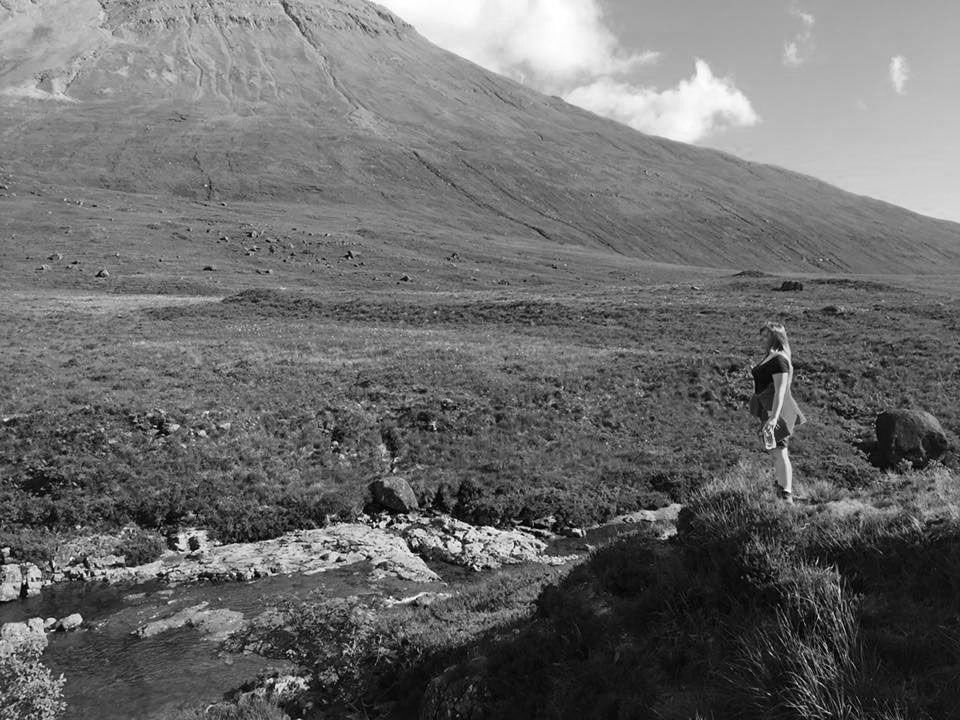

Hello! Welcome to my little corner of the web.
I've loved astronomy since I was old enough to write, so today I spend most my time looking at baby pictures of the universe. Aside from work I like nature, palaeontology and science-fiction (which is probably why Jurassic Park is my favourite film).
Languages, coding and photography are some of my later-life loves and I created this website largely as an excercise in all three. Please feel free to contact me about this or any other topic you'd like to chat about.
Oh, and once upon a time I was in a folk metal band and actually founded a music festival.